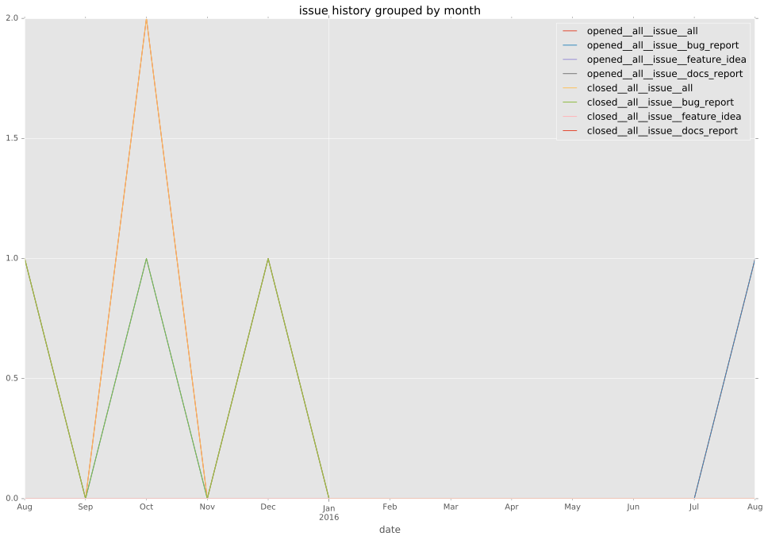
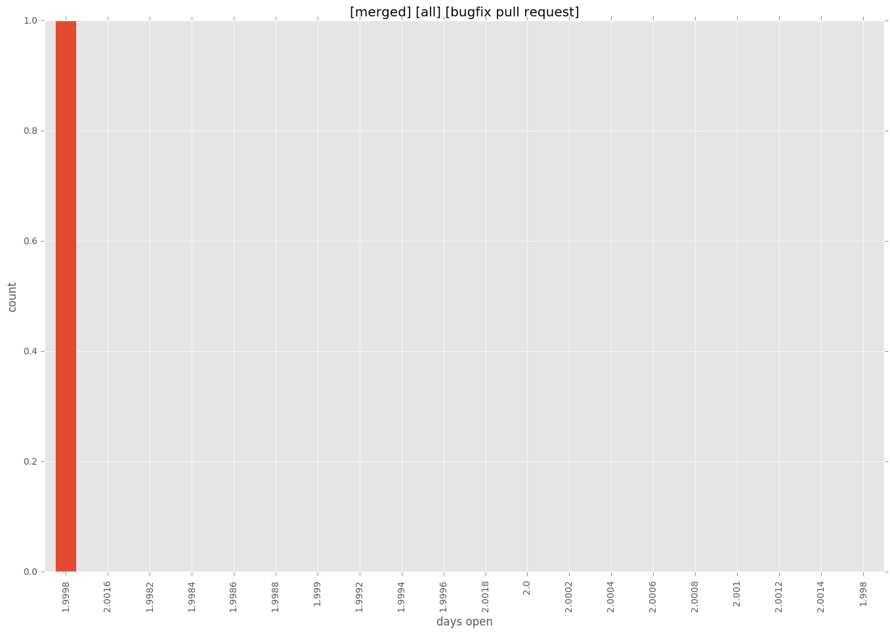
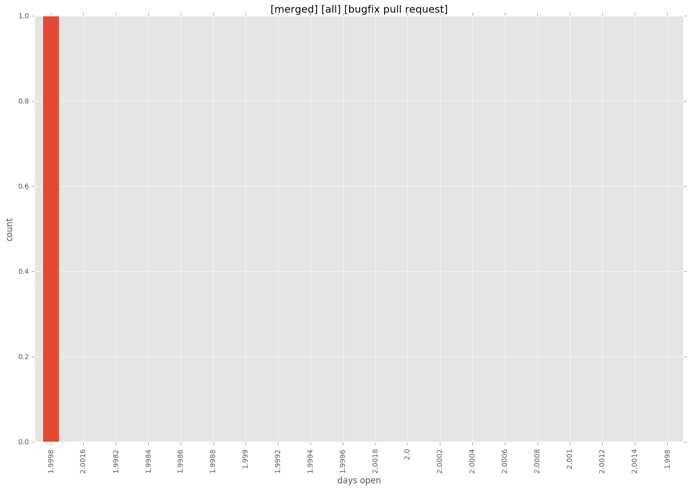

total issue counts
feature pull request: 1
bugfix pull request: 3
pullrequest: 4
issue: 4
bug report: 4
issue history

days open by issue type
bugfix pull request
count: 3
std: 2.30940107676
min: 2
max: 6
median: 2.0
mean: 3.33333333333
all
count: 8
std: 60.0493844384
min: 0
max: 132
median: 2.5
mean: 34.75
pullrequest
count: 0
std: nan
min: nan
max: nan
median: nan
mean: nan
feature pull request
count: 2
std: 0.0
min: 132
max: 132
median: 132.0
mean: 132.0
issue
count: 0
std: nan
min: nan
max: nan
median: nan
mean: nan
bug report
count: 3
std: 1.52752523165
min: 0
max: 3
median: 1.0
mean: 1.33333333333
closures grouped by total days open

 
